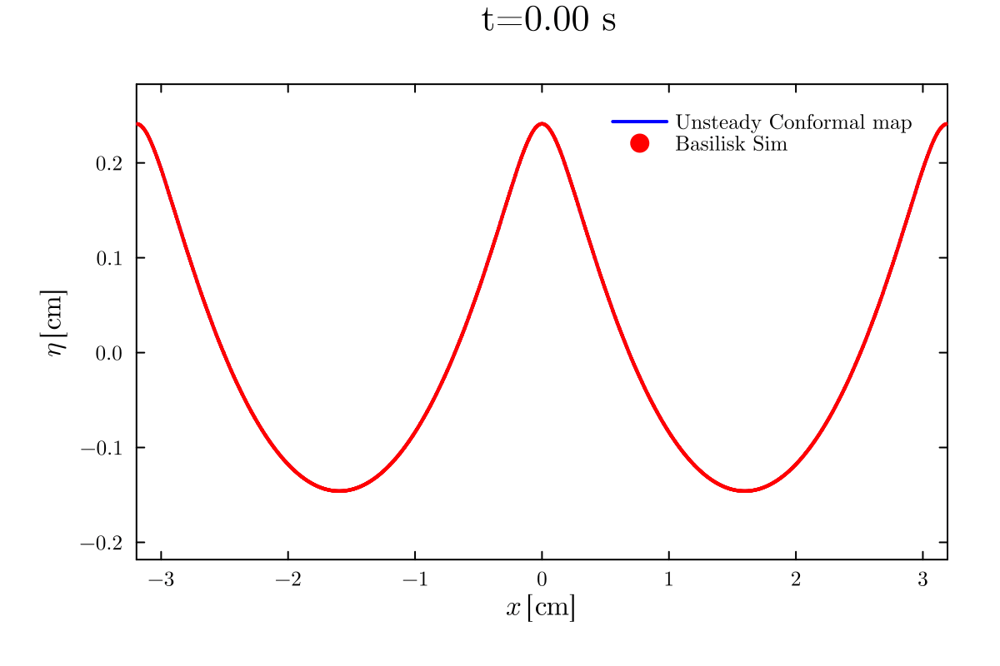

Evolution of capillary-gravity waves with CFD (Basilisk) and unsteady Conformal Mapping
This page implements IVP for gravity–capillary waves in deep water using a conformal mapping approach (initialised as pure-gravity Stokes wave), and compares the results against direct numerical simulations from the Basilisk VOF solver.[1] Every FFT and spectral operation is written explicitly using plain FFTW.fft/FFTW.ifft calls.
The IVP is evolved in a frame co-moving with the steady wave at speed $c = 24$ cm/s. The computed surface profiles are compared against Basilisk VOF simulation data from notebooks/basilisk_gc_ivp/interface_data/.
Physical parameters (CGS): $N = 1024$, $\varepsilon = 0.9$, $c = 24$ cm/s, $T = 0.26$ s (final simulation time).
Installation
Install the required Julia packages from the REPL before running the code on this page:
julia> using Pkg
julia> Pkg.add(["FFTW", "OrdinaryDiffEq", "OrdinaryDiffEqRosenbrock", "LinearSolve",
"NonlinearSolve", "Plots", "LaTeXStrings"])Or equivalently in Pkg mode (press ] in the REPL):
pkg> add FFTW OrdinaryDiffEq OrdinaryDiffEqRosenbrock LinearSolve NonlinearSolve Plots LaTeXStrings| Package | Purpose |
|---|---|
FFTW | Fast Fourier transforms for spectral derivatives |
OrdinaryDiffEq | ODE solvers (ODEProblem, solve) |
OrdinaryDiffEqRosenbrock | Rosenbrock stiff solver (ROK4a) used for time integration |
LinearSolve | Linear solver backend (KrylovJL) for the Rosenbrock method |
NonlinearSolve | Root-finding algorithms for the steady-state energy continuation |
1. Conformal-Mapping Formulation [2]
We work in the co-moving conformal frame with $\xi \in [-\tfrac{1}{2}, \tfrac{1}{2})$, where the unknowns are the free-surface elevation $Y(\xi, t)$ and the velocity potential on the free surface $\varphi(\xi, t)$. The physical horizontal coordinate is recovered via the Hilbert transform:
\[X_\xi = 1 - \mathcal{H}[Y_\xi], \qquad X_{\xi\xi} = -\mathcal{H}[Y_{\xi\xi}],\]
and the Jacobian of the conformal map is $J = X_\xi^2 + Y_\xi^2$. The stream function satisfies $\psi_\xi = Y_\xi$ (kinematic identity), and $\varphi_\xi = -\mathcal{H}[\psi_\xi]$ by the Cauchy–Riemann relation.
Evolution Equations
Defining the normal velocity $V = (Y_\xi - \mathcal{H}[\varphi_\xi])/J$, the kinematic and dynamic equations are:
\[\frac{\partial Y}{\partial t} = X_\xi \, V - Y_\xi \, \mathcal{H}[V]\]
\[\frac{\partial \varphi}{\partial t} = \frac{\psi_\xi^2 - \varphi_\xi^2}{2J} - \frac{Y}{F^2} + \frac{B}{F^2} \frac{X_\xi Y_{\xi\xi} - Y_\xi X_{\xi\xi}}{J^{3/2}} + \frac{X_\xi \varphi_\xi}{J} - \varphi_\xi \, \mathcal{H}[V]\]
where $\psi_\xi = \mathcal{H}[\varphi_\xi]$, $F$ is the Froude number, and $B$ is the Bond number.
2. Setup and Spectral Helpers
using FFTW
using OrdinaryDiffEq, OrdinaryDiffEqRosenbrock, LinearSolve
using NonlinearSolve
using Plots, LaTeXStrings, Printf
using DelimitedFilesconst N = 1024
ξ = [(-1/2) + j/N for j in 0:N-1]
k = [0:(N÷2)-1; 0; (-N÷2)+1:-1]
d = 2π * im .* k
h = im .* sign.(k); h[1] = 0; h[N÷2+1] = 0
# Readable spectral helpers (allocating, simple)
deriv(Y) = real(ifft(d .* fft(Y)))
deriv2(Y) = real(ifft(d.^2 .* fft(Y)))
hilbert(Y) = real(ifft(h .* fft(Y)))
hilbert_deriv(Y) = real(ifft(h .* d .* fft(Y)))
function spectral_integrate(f)
f̂ = fft(f); F̂ = f̂ ./ d
F̂[1] = 0; F̂[N÷2+1] = 0
return real(ifft(F̂))
end
# Composite Simpson weights on the endpoint-excluded uniform grid.
# These match the GravityProblem energy quadrature used for the Basilisk IC.
function simpson_weights_uniform(ξ)
n = length(ξ)
Δξ = ξ[2] - ξ[1]
w = fill(2 * Δξ / 3, n)
w[2:2:n-3] .= 4 * Δξ / 3
w[1] = Δξ / 3
w[n-2] = 5 * Δξ / 4
w[n-1] = Δξ
w[n] = 5 * Δξ / 12
return w
end
simpson_w = simpson_weights_uniform(ξ)
simpson_integral(f) = sum(simpson_w .* f)
println("Grid: N=$N")3. Steady Base State Initialization (Pure Gravity, $B = 0$)
The IVP initial condition is the steady-state wave profile, computed via energy continuation from a small linear seed up to target steepness $\varepsilon = 0.9$. During this phase $B = 0$ exactly (pure gravity), so curvature and second-derivative terms in the Bernoulli equation contribute nothing to the residual. The continuation solves the nonlinear system at each $\varepsilon$ step using Newton–Raphson, with the previous solution as the initial guess.
The energy functional (kinetic + potential) is
\[E = \frac{F^2}{2}\int \varphi\,(-\psi_\xi)\,d\xi + \frac{1}{2}\int Y^2 X_\xi\,d\xi,\]
and $\varepsilon$ is defined via $E = \varepsilon \cdot E_{hw}$, where $E_{hw} = 0.00184$ is the energy of the steepest Stokes wave[2]. The continuation ramps $\varepsilon$ from $10^{-7}$ up to $0.9$, producing the Froude number and surface profile used to populate params.h for Basilisk.
The steady surface profile $Y(\xi)$ and $F_{\text{steady}}$ from this continuation are used to construct FreeSurface.dat (the dimensional free-surface interface profile $(x, y)$) and velocity_interpolated_below.dat (the dimensional velocity field sampled just below the interface), which run_gc_ivp.c reads for initialization.
const Ehw = 0.00184
function gravity_residual!(du, u, ε)
Y = u[1:N]
F = u[end]
F2 = F^2
Yξ = deriv(Y)
Xξ = 1.0 .- hilbert_deriv(Y)
J = Xξ.^2 .+ Yξ.^2
ψξ = Yξ
ϕξ = -hilbert(ψξ)
ϕ = spectral_integrate(ϕξ)
ϕ .-= sum(ϕ .* Xξ) / sum(Xξ)
for i in 1:N
du[i] = -F2 * (Xξ[i] * ϕξ[i] + Yξ[i] * ψξ[i]) / J[i] +
F2 * (ϕξ[i]^2 + ψξ[i]^2) / (2 * J[i]) + Y[i]
end
KE = (F2 / 2) * simpson_integral(-ϕ .* ψξ)
PE = simpson_integral(Y.^2 .* Xξ) / 2
du[N+1] = (KE + PE) / Ehw - ε
end
Y0 = 1e-5 .* cos.(2π .* ξ)
F0 = sqrt(1 / (2π))
u0_steady = vcat(Y0, F0)
ε_target = 0.9
ε_schedule = Float64[]
ε = 1e-7
while ε < 1e-2
push!(ε_schedule, ε)
ε *= 2
end
append!(ε_schedule, 0.01:0.01:min(0.50, ε_target))
if ε_target > 0.50
append!(ε_schedule, 0.52:0.02:ε_target)
end
println("Running pure-gravity energy continuation ($(length(ε_schedule)) steps) ...")
@time for (step, ε) in enumerate(ε_schedule)
prob = NonlinearProblem(gravity_residual!, u0_steady, ε)
sol = NonlinearSolve.solve(prob,
NewtonRaphson(; autodiff=AutoFiniteDiff());
abstol=1e-10, maxiters=100)
global u0_steady = sol.u
if step % 20 == 0 || step == length(ε_schedule)
F_s = sol.u[end]
kH2 = (maximum(sol.u[1:N]) - minimum(sol.u[1:N])) * π
@printf(" step %3d: ε=%.2f, F=%.6f, kH/2=%.4f, %s\n",
step, ε, F_s, kH2, sol.retcode)
end
end
Y_steady = u0_steady[1:N]
F_steady = u0_steady[end]
@printf("Steady state: F = %.10f, kH/2 = %.6f\n", F_steady, (maximum(Y_steady) - minimum(Y_steady)) * π)4. Physical Parameters and Initial Condition
We fix $c = 24$ cm/s to match the Basilisk comparison data. The Bond number $B$ is derived from the computed wavelength:
const g_cgs = 981.0
const σ_cgs = 72.0
const ρ_cgs = 1.0
const c_cgs = 24.0
λ_cm = c_cgs^2 / (F_steady^2 * g_cgs)
B_ivp = σ_cgs / (ρ_cgs * g_cgs * λ_cm^2)
@printf("F = %.10f\n", F_steady)
@printf("λ = %.6f cm\n", λ_cm)
@printf("B = %.10f\n", B_ivp)
@printf("c = %.1f cm/s\n", c_cgs)
# Reconstruct ϕ from the steady kinematic relation
ϕξ_steady = -hilbert(deriv(Y_steady))
ϕ_steady = spectral_integrate(ϕξ_steady)
Xξ_steady = 1.0 .- hilbert_deriv(Y_steady)
ϕ_steady .-= sum(ϕ_steady .* Xξ_steady) / sum(Xξ_steady)
u0_ivp = vcat(Y_steady, ϕ_steady)
println("IVP state: 2×$N = $(length(u0_ivp))")5. ODE Right-Hand Side
Readable, allocating RHS — every line corresponds directly to the conformal-mapping equations in §1:
function gc_rhs!(du, u, p, t)
F, B = p
Y = u[1:N]; ϕ = u[N+1:2N]
Yξ = deriv(Y)
Yξξ = deriv2(Y)
Xξ = 1.0 .- hilbert_deriv(Y)
Xξξ = -hilbert(deriv2(Y))
J = Xξ.^2 .+ Yξ.^2
ϕξ = deriv(ϕ)
ψξ = hilbert(ϕξ)
V = (Yξ .- ψξ) ./ J
HV = hilbert(V)
# Kinematic
du[1:N] .= Xξ .* V .- Yξ .* HV
# Dynamic
F2 = F^2
curvature = (Xξ .* Yξξ .- Yξ .* Xξξ) ./ J.^(3/2)
du[N+1:2N] .= (ψξ.^2 .- ϕξ.^2) ./ (2 .* J) .-
Y ./ F2 .+ (B / F2) .* curvature .+
Xξ .* ϕξ ./ J .- ϕξ .* HV
end6. Time Integration
T_phys = 0.26 # s
Δt_save = 0.01 # s
τ_per_s = c_cgs / λ_cm
τ_final = τ_per_s * T_phys
τ_save = τ_per_s .* collect(0:Δt_save:T_phys)
t_phys = collect(0:Δt_save:T_phys)
println("Integrating for $T_phys s ($(length(τ_save)) snapshots) ...")
f_ivp = ODEFunction(gc_rhs!)
prob = ODEProblem(f_ivp, u0_ivp, (0.0, τ_final), (F_steady, B_ivp))
@time sol = solve(prob, ROK4a(autodiff=AutoFiniteDiff(), linsolve=KrylovJL());
saveat=τ_save, abstol=1e-11, reltol=1e-11, maxiters=10^7)
println("Solver: $(sol.retcode), $(length(sol.u)) snapshots")7. Basilisk CFD Simulation
The following commands require Basilisk to be installed. All source files are in notebooks/basilisk_gc_ivp/.
Prerequisites: FreeSurface.dat (dimensional free-surface interface profile) and velocity_interpolated_below.dat (dimensional velocity field just below the interface) must be present in notebooks/basilisk_gc_ivp/ before running — these are generated from the conformal mapping steady-state solution above.
run_gc_ivp.c
Reads FreeSurface.dat and velocity_interpolated_below.dat for initialization, then writes Basilisk dumps to dumpfile/dump-* and interface facets directly to interface_data/interface-*.dat.
# Compile and run the Basilisk IVP solver (serial)
qcc -O2 -o run_gc_ivp run_gc_ivp.c -lm
./run_gc_ivpextract.c
Converts dumpfile/dump-* snapshots to VTU format, generating vtufiles/series.pvd for visualization in ParaView.
# Post-process: Basilisk dumps → VTU files
qcc -O2 -o extract extract.c -lm
./extractvtu_to_interface_dat.py
Extracts the interface contour $(x,\,y)$ from each VTU snapshot and writes it to interface_data/interface-*.dat. Requires ParaView with pvpython support. This step is optional if run_gc_ivp.c has already written the interface facets directly.
# Post-process: VTU → interface geometry DAT files
# Replace <path_to_pvpython> with the pvpython executable from your ParaView installation
# e.g. /usr/bin/pvpython (Linux)
# /opt/paraview/bin/pvpython (Linux, custom install)
# /Applications/ParaView-X.Y.Z.app/Contents/bin/pvpython (macOS)
<path_to_pvpython> vtu_to_interface_dat.py \
vtufiles/series.pvd \
--output-dir interface_data \
--overwriteThe resulting interface_data/interface-*.dat files contain the PLIC (Piecewise Linear Interface Construction) facet endpoints used for comparison below.
8. Comparison: Conformal IVP vs Basilisk
The native Basilisk output_facets() files are read from interface_data/interface-<index>.dat. Each non-blank line is a PLIC facet endpoint $(x, y)$; blank lines separate facets. They are plotted as adaptive-grid scatter points without profile resampling.
basilisk_interface_dir = joinpath(@__DIR__, "basilisk_gc_ivp", "interface_data")
function read_basilisk_facet_endpoints(path::AbstractString)
endpoints = NTuple{2, Float64}[]
for raw in eachline(path)
line = strip(raw)
isempty(line) && continue
values = split(line)
length(values) == 2 || error("Invalid Basilisk facet line in $path: $raw")
push!(endpoints, (parse(Float64, values[1]), parse(Float64, values[2])))
end
isempty(endpoints) && error("No Basilisk facet endpoints in $path")
return endpoints
end
basilisk_endpoints = Dict{Int, Vector{NTuple{2, Float64}}}()
for idx in 0:length(t_phys)-1
path = joinpath(basilisk_interface_dir, "interface-$idx.dat")
if isfile(path)
basilisk_endpoints[idx] = read_basilisk_facet_endpoints(path)
end
end
println("Loaded $(length(basilisk_endpoints)) direct Basilisk facet snapshots")The animation overlays the conformal IVP solution (blue) with the native Basilisk PLIC facet endpoints (red), matched by snapshot index and physical time:
function surface_lab(u, t_s)
Y = u[1:N]
x_co = λ_cm .* (ξ .- hilbert(Y))
return x_co .+ c_cgs * t_s, λ_cm .* Y
end
anim = @animate for (frame, (u, t_s)) in enumerate(zip(sol.u, t_phys))
idx = frame - 1
x, y = surface_lab(u, t_s)
p = plot(;
xlims=(-λ_cm, λ_cm),
xlabel=L"x \; [\mathrm{cm}]",
ylabel=L"\eta \; [\mathrm{cm}]",
title=@sprintf(" t=%.2f s", t_s),
legend=:topright,
)
for m in -2:2
plot!(p, x .+ m * λ_cm, y;
color=:blue, linewidth=2,
label=(m == -2 ? "Unsteady Conformal map" : false))
end
if haskey(basilisk_endpoints, idx)
endpoints = basilisk_endpoints[idx]
scatter!(p, [point[1] for point in endpoints], [point[2] for point in endpoints];
color=:red, markersize=1.2, markerstrokewidth=0,
label="Basilisk Sim")
end
p
end
gif(anim, "gc_ivp_comparison.gif"; fps=5)
References
- 1Popinet, S., & collaborators. (2013–2026). Basilisk: Free software for solving partial differential equations on adaptive Cartesian meshes. http://basilisk.fr
- 2Shelton, J., Milewski, P., & Trinh, P. H. (2021). On the structure of steady parasitic gravity-capillary waves in the small surface tension limit. Journal of Fluid Mechanics, 922, A16. https://doi.org/10.1017/jfm.2021.507